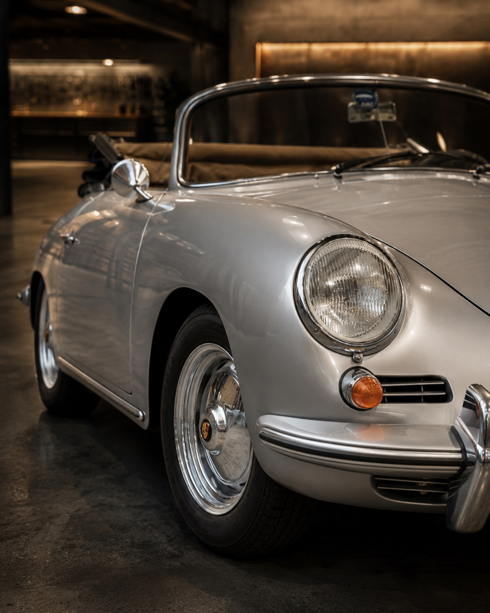
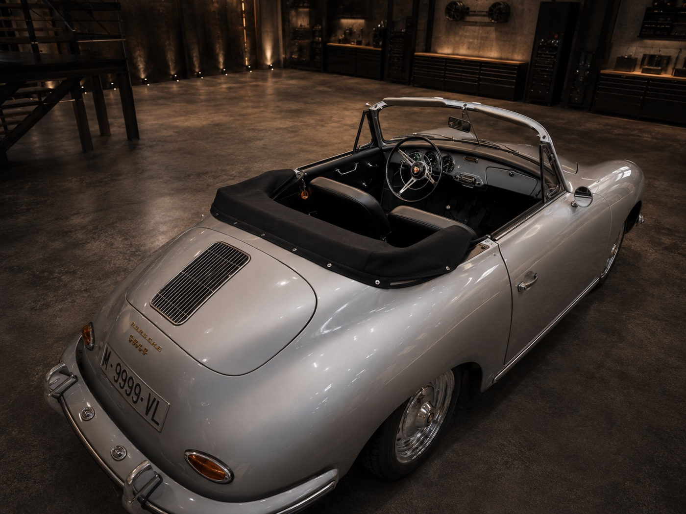
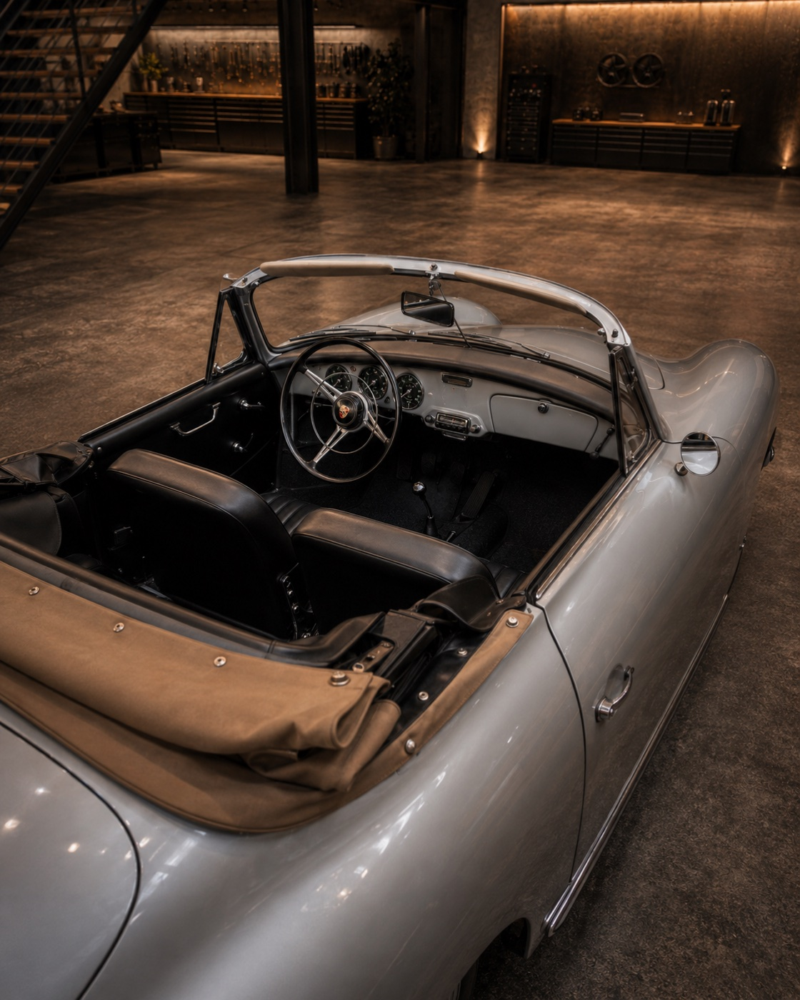
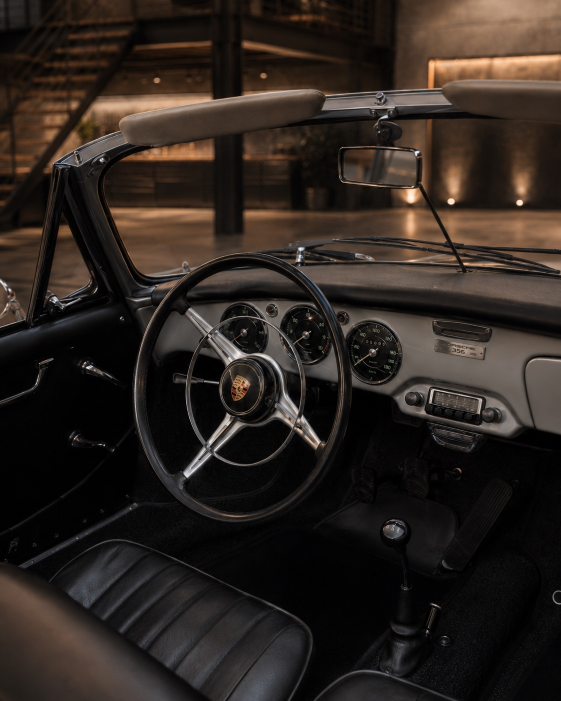
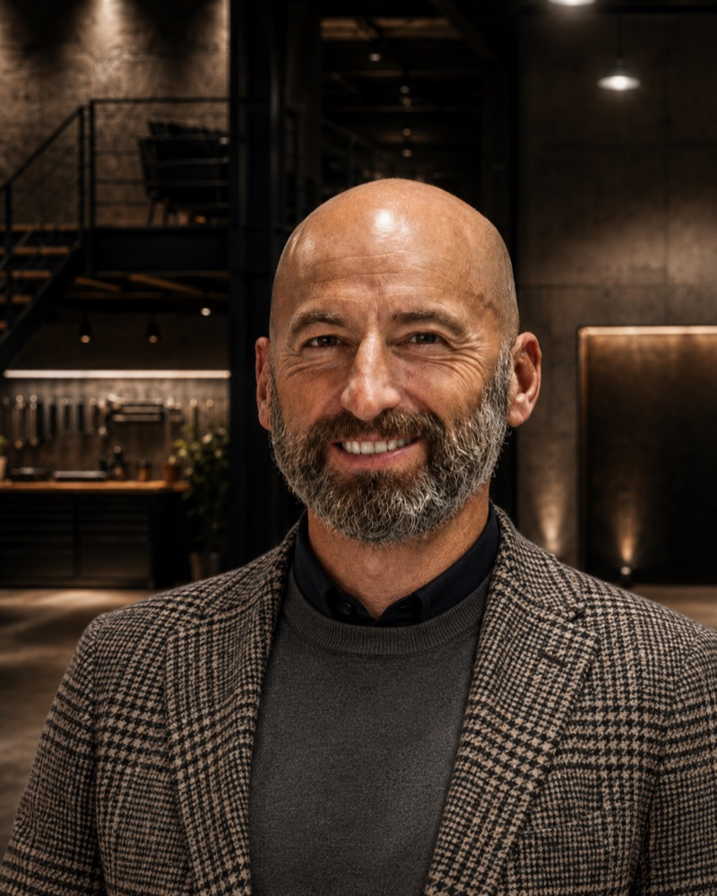

Galería
Plata.
Carrocería KAAN
restaurada íntegramente.

Vista frontal · Plata · Cromados clásicos
01 / 05
Valentin Motors · Especialista Porsche desde 1979
Un clásico esencial de Porsche, restaurado por completo.
Historia del vehículo
El Porsche 356 B fue la evolución de la serie A, con cambios que el mercado acogió con gran éxito. Esta unidad corresponde al chasis 153.320, del año 1960, y equipa una mecánica bóxer de 1.582 cm³ que desarrolla 90 hp.
El motor no es el mismo que salió de fábrica, pero sí corresponde a su época, identificado con el número 800.350. La carrocería ha sido realizada por los austríacos de KAAN, especialistas en restauración de clásicos de la más alta exigencia.
Se presenta como una interpretación fiel del 356 B Cabriolet, restaurada íntegramente y conservando el espíritu técnico y estético del modelo fundacional de Porsche.
No es simplemente un Porsche clásico. Es el punto de partida de la identidad Porsche, restaurado a la más alta exigencia por especialistas europeos.
Galería
Motor y Mecánica
El bóxer de cuatro cilindros de 1.582 cm³ representa la mecánica fundacional de Porsche: ligero, equilibrado, de bajas vibraciones. La carburación y la entrega progresiva de los 90 hp a 5.200 rpm definen un carácter de conducción puro, directo y profundamente conectado con el conductor.
El motor lleva el número 800.350. No es el original de fábrica, pero corresponde íntegramente a su época, una práctica habitual y aceptada en el mercado de clásicos Porsche 356 de alto nivel. La caja manual de cuatro velocidades completa una mecánica que no ha necesitado ser reinventada.
Par máximo de 123 Nm entre 3.500 y 3.800 rpm. Alimentación por carburación. Mercado alemán de origen.
Restauración completa
Exterior
La carrocería en plata sitúa esta unidad dentro de una lectura sobria y atemporal del 356. Las formas limpias, los cromados y la proporción ligera del cabriolet permiten entender por qué el modelo se convirtió rápidamente en una de las siluetas más reconocibles de la historia de Porsche. La restauración fue realizada íntegramente por KAAN, especialistas austríacos de referencia en carrocería clásica.


Interior


El interior negro mantiene la lectura clásica y funcional del 356. La restauración completa devuelve al habitáculo su carácter original: sencillo, directo y profundamente mecánico, con una conducción centrada en la relación entre conductor, volante, cambio y motor bóxer. Incluye cubre capota y tonneau cover.
Documentación y Procedencia
Ficha técnica

Más de 25 años de experiencia con Porsche de colección. Ha supervisado cientos de operaciones de compraventa de vehículos especiales, con especial foco en preparaciones RUF, Singer y Guntherwerks.
La opinión de Jordi
"El Porsche 356 actualmente debe estar en cualquier colección o semi colección de un apasionado de la marca."
El gran éxito comercial del modelo, sobre todo en Estados Unidos y a través de su importador Max Hoffmann, requirió a Porsche el desarrollo de un modelo más económico para el mercado americano. De ahí nació el 356 Speedster, que más adelante se convirtió también en icono de la marca por la historia del legendario actor James Dean.
Por contra, en Europa, el departamento comercial de la marca observó que las versiones cabriolet circulaban muy a menudo con la capota puesta. Este detalle les alentó a fabricar la versión hardtop, diseñada por el afamado carrocero Karmann, que no era más que un 356 carrozado pero con la estética de un hardtop.
Esta unidad, con chasis 153.320 y restauración completa por KAAN, representa exactamente el tipo de pieza que define una colección seria: historia documentada, carrocería de referencia y una mecánica honesta y correspondiente a su época.
Un Porsche 356 B Cabriolet restaurado por completo,
con carrocería KAAN, configuración europea
y una presencia clásica que lo sitúa como pieza esencial
para cualquier colección Porsche.